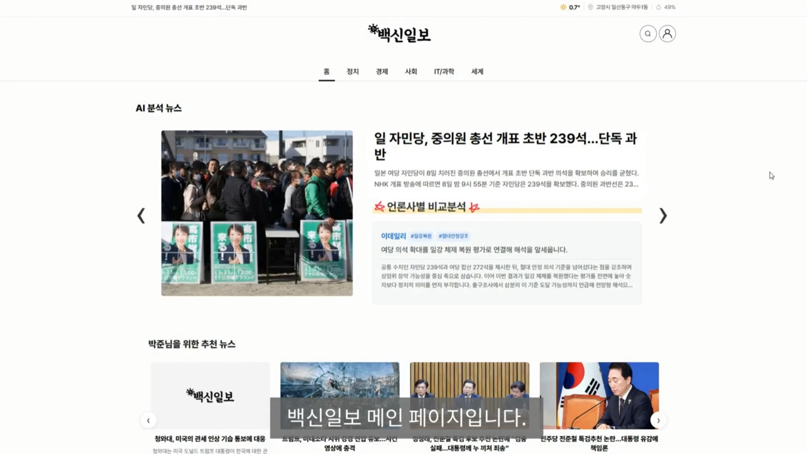

전현식
AI & Backend 개발자 포트폴리오
Portfolio: https://portfolio-app-5ca9.vercel.app/
jeonhs9110@gmail.com | Seoul, Korea
+82 10-4092-0628 | linkedin.com/in/hyunsikjeon

주요 프로젝트 01
IBM & RedHat AI Transformation 교육 과정 - 최우수상 수상
백신일보 (AI 개인화 뉴스 파이프라인) 전현식 외 2명
React · FastAPI · PostgreSQL · ChromaDB · GPT-4o-mini · ko-sroberta · HDBSCAN ·
GraphRAG · Docker
10개 주요 언론사를 실시간으로 추적하고, 검증된 리포트를 생성하는 고도화된 AI 자동화 파이프라인입니다.
기술 파이프라인 세부 내용
- 1. Crawling Selenium 및 BeautifulSoup을 활용한 10개 언론사 리얼타임 데이터 수집 파이프라인
- 2. Clustering HDBSCAN 알고리즘과 ko-sroberta 임베딩을 통한 토큰 효율적 유사 기사 그룹화
- 3. AI News Article Generator Writer-Critic-Editor 구조의 3단계 멀티 에이전트 AI를 통한 팩트 체크 및 자동 요약
- 4. GraphRAG Entity-Relation 추출 및 지식 그래프 구축을 통한 개별 언론사 보도 논조(Media Tone of Voice) 시각화
